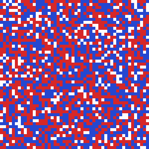

I’m a Master of Finance candidate at MIT Sloan, concentrating in financial engineering. I build quantitative research from raw data to tested conclusions, and I hold every result to a fair benchmark before I believe it.
Before MIT, I studied applied mathematics and quantitative economics at Brandeis University, graduating summa cum laude with a 4.0 GPA.
Each project below links to its code, data notes and tests, so every number can be traced back to how it was made.
Early termination of pandemic unemployment insurance
Senior thesis, Brandeis University, 2026. Advised by Jiwon Choi and Tymon Słoczyński.
Ending benefits early lowered unemployment by about half a point, but brought no robust gains in employment, wages or business activity.
In mid-2021, some U.S. states ended federal pandemic unemployment benefits months early. To separate the policy’s effect from regional differences in recovery, I compared neighboring counties on opposite sides of state borders, which share local economic conditions but faced different policies.
502 contiguous cross-border county pairs, with event-study models and pair-by-month fixed effects on BLS LAUS and QCEW data.
Robustness checks with 907 alternative pairs one county removed from the border, and with county-level clustering.
Pre-treatment trends suggest part of the unemployment decline predates the policy, so the true effect is likely smaller still.
Schelling’s segregation model: a numerical map of tipping points
Team project, Brandeis, 2025. I led the project.
When two groups differ in how many similar neighbors they want, the model splits into four distinct regimes, and its tipping points fall exactly at whole-number neighbor ratios.
Agents relocate when too few of their neighbors belong to their own group. Mapping convergence and segregation across every combination of the two groups’ tolerances revealed:
A sharp tipping point at a tolerance of 0.75 (9 of 12 neighbors): every run converges at 0.75, none at 0.76.
Staged boundaries at 4/12 and 4/11, explained by agents at the grid’s edge having one neighbor fewer.
A bookkeeping bug in the original simulation, now fixed and covered by tests, with a switch that reproduces the original results exactly.

Every agent wants at least 70% similar neighbors. A mixed grid sorts into near-total segregation.
Industrial silicon: fundamentals, forecasting and producer risk
Commodity research internship, Lakefront Asset Management, 2025. Rebuilt and extended in 2026.
By June 2025, industrial silicon prices had fallen below the production cost of even the lowest-cost Chinese producer.
Industrial silicon is the feedstock for solar polysilicon, silicone chemicals and aluminum alloys, and China holds over 80% of world capacity. I built the analysis from the bottom up: what drives demand, what production costs in each region, and what that means for producers’ margins and price risk.
Supply and demand
I traced each downstream use and converted its output into silicon demand (1.08 t per tonne of polysilicon, 0.52 t per tonne of silicone feedstock, 0.22 t per tonne of primary aluminum alloy) to build a monthly supply–demand balance. Supply exceeded estimated demand in 33 of 35 months while prices fell by more than half.
Monthly surplus of supply over estimated demand (bars) and the 553# spot price in Kunming (line).
Costs and margins
A bottom-up cost model (unit consumption × unit price for each input) across four regional and seasonal benchmarks shows electricity driving 37–50% of cost. Stress tests show that at mid-2025 prices any single adverse shock (a 10% price fall, 0.05 CNY/kWh more for power, or 20% dearer raw materials) pushes even the lowest-cost producer into a loss.
Left: spot prices against each producer type’s cost. Right: cost curve of the five largest producers, with the 2025 low in Xinjiang spot.
Price and volatility
On 2.6 years of daily futures data, ARIMA forecasts matched but did not beat a random walk (both 1.2% average daily error). Volatility, however, was predictable: a GARCH model cut breaches of its 95% risk range by 23% versus constant volatility, and its simulated price paths put producers’ one-month probability of a loss between 33% and 99%. Along the way, I traced a false 30% one-day jump in the vendor’s data to a switch between futures contracts, and corrected it.
Independent project, 2025. A first pass that I plan to extend.
Industry momentum earns a sizable gross premium, but taxes take about a quarter of it, and smarter trading wins part of that back.
12-2 momentum across the 49 Fama–French industries, 1970–2025: alpha of 0.83% a month against the three-factor model (t = 4.8).
A lot-level capital-gains engine that tracks each tax lot and carries losses forward. Tax-aware execution, cutting losers and letting winners run, lowers tax drag from 24.8% to 20.5%.
Next: out-of-sample tests, trading costs, and comparison with volatility-scaled momentum.
Built the industrial silicon cost model, margin stress tests and price-forecasting pipeline above, and presented the research to the investment team.
Summer 2024
Global Banking Intern
Bank of Communications, Hong Kong
Screened over 10,000 cross-border transactions for compliance exceptions during account onboarding, and analyzed corporate credit risk for two lending reports.
Summer 2023
Audit and Assurance Intern
Ernst & Young, Shenzhen
Supported the interim review of Hopson Development, verifying property valuations and over 200 bank statements across eight subsidiaries. Sampled over 300 expense vouchers for a manufacturing group, flagging irregular entries that led to audit adjustments, and joined due-diligence fieldwork for a prospective Hong Kong listing.
Teaching
Jan 2025 – May 2026
Drop-in Mathematics Tutor
Department of Mathematics, Brandeis University
Tutored undergraduates in every undergraduate math course, reviewing assignments and preparing them for exams, and advised students on course planning and choice of major.
Sep 2024 – May 2025
Teaching Assistant, Introductory Macroeconomics and Microeconomic Theory
Department of Economics, Brandeis University (ECON 20A and ECON 80)
Led weekly recitations for more than 100 students, and worked with professors to set grading rubrics and standards.
Education
2026 – Feb 2028
Master of Finance
MIT Sloan School of Management
Concentration in financial engineering. Quantitative Finance Club and Data Analytics Club.
2022 – 2026
B.S. Applied Mathematics and B.S. Quantitative Economics
Brandeis University
Summa cum laude, GPA 4.0. Arnold Shapiro Prize in Mathematics; Phi Beta Kappa.
Tools
Python, R, Stata, MATLAB, LaTeX
Methods
Time-series and volatility models, causal inference, agent-based simulation, backtesting